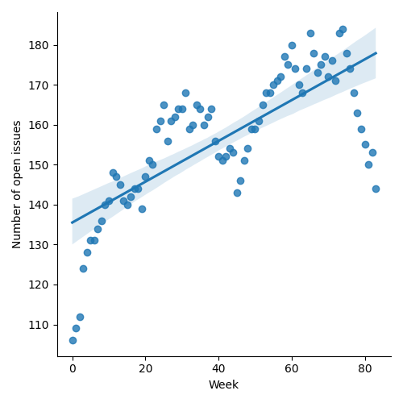
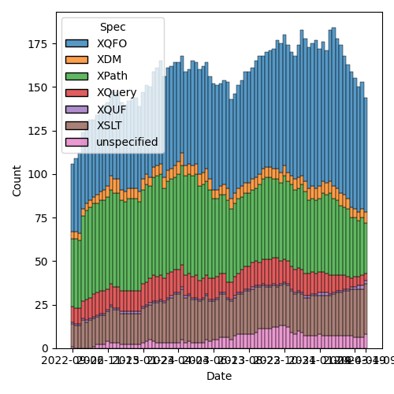

QT4 CG Meeting 073 Minutes 2024-04-16
Table of Contents
- Draft Minutes
- Summary of new and continuing actions
[0/5] - 1. Administrivia
- 2. Technical Agenda
- 2.1. PR #1152: 1146 Inline change log
- 2.2. Making records and options consistent
- 2.3. PR #1151: 1138 Merge format and format-name params of format-number
- 2.4. PR #1150: 1142 Drop restriction disallowing items-equal with unordered
- 2.5. PR #1148: 1143 Coercion rules: handle choice types before atomization
- 2.6. PR #1147: QT4CG-072-01 Clarify schema type terminology
- 2.7. PR #1141: 1140 Replace 'search' with 'target' for indexing functions
- 3. Any other business
- 4. Adjourned
Meeting index / QT4CG.org / Dashboard / GH Issues / GH Pull Requests
Draft Minutes
Summary of new and continuing actions [0/5]
[ ]QT4CG-063-06: MK to consider refactoring the declare item type syntax to something like declare record[ ]QT4CG-071-06: NW to clarify the cases that are distinguished by the leading empty string in path segments[ ]QT4CG-072-03: NW to clarify the round-tripping of URIs[ ]QT4CG-072-04: DN to raise an issue about having a function to test if a collation URI is supported[ ]QT4CG-073-01: NW to proceed with the records/options proposal and make a PR.
1. Administrivia
1.1. Roll call [9/14]
Regrets: JLY, SF.
[X]Reece Dunn (RD)[ ]Sasha Firsov (SF)[X]Christian Grün (CG)[X]Joel Kalvesmaki (JK)[X]Michael Kay (MK)[ ]Juri Leino (JLO)[ ]John Lumley (JLY)[X]Dimitre Novatchev (DN)[X]Wendell Piez (WP) [:57-][X]Ed Porter (EP)[ ]Liam Quin (LQ)[ ]Adam Retter (AR)[X]C. M. Sperberg-McQueen (MSM)[X]Norm Tovey-Walsh (NW). Scribe. Chair.
1.2. Accept the agenda
Proposal: Accept the agenda.
Accepted.
1.2.1. Status so far…

Figure 1: “Burn down” chart on open issues

Figure 2: Open issues by specification

Figure 3: Open issues by type
1.3. Approve minutes of the previous meeting
Proposal: Accept the minutes of the previous meeting.
Accepted.
1.4. Next meeting
The next meeting is scheduled for Tuesday, 23 April 2024.
JLY gives regrets 23 April.
1.5. Review of open action items [5/9]
[ ]QT4CG-063-06: MK to consider refactoring the declare item type syntax to something like declare record[X]QT4CG-064-08: NW to open an issue to try to resolve $search to $target consistently.[X]QT4CG-069-02: NW to coordinate with MK to use the introspection features on the test suite.[X]QT4CG-070-01: NW to review how records are formatted.[ ]QT4CG-071-06: NW to clarify the cases that are distinguished by the leading empty string in path segments[X]QT4CG-072-01: MK to consider whether and when a choice type should be classified as a schema type[X]QT4CG-072-02: MK to clarify that the position variable is a single, positive integer.[ ]QT4CG-072-03: NW to clarify the round-tripping of URIs[ ]QT4CG-072-04: DN to raise an issue about having a function to test if a collation URI is supported
1.6. Review of open pull requests and issues
1.6.1. Merge without discussion
The following PRs are editorial, small, or otherwise appeared to be uncontroversial when the agenda was prepared. The chairs propose that these can be merged without discussion. If you think discussion is necessary, please say so.
- PR #1149: 1084 Add fos:default-description to support prose descriptions of defaults
Proposal: merge without discussion.
Approved.
1.6.2. Close without action
It has been proposed that the following issues be closed without action. If you think discussion is necessary, please say so.
- Issue #1115: XSLT - ability to call a function from xslt (not just xpath)
- Issue #836: Add support for CSV 'dialect' features covered by the OKFN's Frictionless Data CSV spec in `fn:parse-csv` and related functions
- Issue #397: Type names
- Issue #298: Abstract supertype for map and array
- Issue #115: Lookup operator on arrays of maps
Proposal: close without further action.
Approved.
2. Technical Agenda
2.1. PR #1152: 1146 Inline change log
See PR #1152
MK describes his proposal for managing change log appendices.
- JK: I think this is fantastic; what practices should we follow for PRs?
- MK: Let me show you the markup…
- … The editors should maintain this in PRs.
Some discussion of the content model.
- MSM: If you need more than one paragraph, you should put that description into the issue or something hyperlinked from the note.
- RD: With respect to the delta’s, can we improve the presentations
- NW: Yeah, I can fix that.
- MSM: The choice of delta as a symbol is suggestive.
Some discussion of whether this is for the final presentation or just for work-in-progress. Manual change markings aren’t too distracting.
- RD: When we publish the new version, are we intending on publishing the diffs as well. Would it make sense to link the changes to the relevant sections in the diff version.
Some discussion of the automatically generated diff; probably too much noise.
- DN: The delta is very useful; it would not be so useful if there are too many of them. Could we make sections with greater numbers of changes stand out more.
- NW: We can try to do something like that.
- RD: Do we have a formal notion of how to phrase the changes?
- MK: Getting that consistent is a challenge.
Proposal: adopt this change.
Accepted.
2.2. Making records and options consistent
See email thread.
NW describes the email thread.
- RD: I think it makes sense to keep them like the prototype
- … Being able to name the record would be useful.
- … We could use the declare-type URI structure record.
- … It would also be nice to have the record/description definitions be links.
- MK: What about making the record and the description more closely linked, shading or a box.
- ED: Some sort of title perhaps.
- JK: Go with this. If we need more do more in the future, we can add more markup.
ACTION: NW to proceed with the records/options proposal and make a PR.
2.3. PR #1151: 1138 Merge format and format-name params of format-number
See PR #1151
MK introduces the PR.
- RD: I like the proposal; I wonder what the reason is for dropping the QName in the format name.
- MK: Because we added that earlier in 4.0 so it’s not backwards incompatible.
- RD: The format-name parameter in the map allows either.
- MK: Specifying it in the map is slightly different; if you use it in the options it doesn’t depend on the namespace context. If you want a QName, you have to use a QName. A name without a prefix will always be in no namespace.
- RD: But in terms of consistency between a format name outside of the options map or inside it,…if you specify it as a string, then the string will be case to an NCName.
Some discussion of how conversion applies here.
- MK: If you supply a string, then it’ll be cast to an NCName. That’s why they’re in the order specified.
- RD: So the only other case is where you have an xs:QName as a format name; you can pass that to the options map but you can’t pass it to the function directly.
- MK: Right. That wasn’t allowed in 3.1.
- RD: I’d be in favor of keeping the xs:QName as a function argument to preserve symmetry.
- MK: That’s not the only asymmetry, there’s also a difference in how unprefixed names are handled.
Proposal: accept this PR.
Accepted.
2.4. PR #1150: 1142 Drop restriction disallowing items-equal with unordered
See PR #1150
MK introduces the PR.
- MK: When we introduced the items-equal callback to deep-equal, I added a
paternalistic restriction that it was forbidden when doing unordered
comparisons.
- … CG persuaded me that we should let users ask for it if they want. There are other places where users can ask for things that will have poor performance.
- DN: Can we put in the specification that implementations should warn if users do this?
- MK: Implementations can always produce warnings.
- MSM: Looking at the text highlighted, I think there is a warning in the specification.
- … And if I’m an implementor then I might take this as advice to issue a warning.
General nods of agreement that this is a good place.
- DN: I think there are very few users who read the full specification. So as a user it would always be valuable to have such a warning. It wouldn’t interfere with processing.
- MSM: If implementations warned about everything that could be costly, then almost every program I write will come with so many warnings that I start looking up how to turn warnings off. I don’t worry about performance except when it’s running. I don’t worry about code that runs “fast enough.”
- MK: I’d add that there are users who want to get code to a point where there are no warnings; that makes me reluctant to create false alarm warnings.
- NW: If we try to decide what all the warnings should be, we’ll never finish.
- CG: Most of the time, this will probably perform fine, it depends entirely on the size of the data.
- RD: Profilers are more useful than warnings for performance issues.
Proposal: accept this PR.
Accepted.
2.5. PR #1148: 1143 Coercion rules: handle choice types before atomization
See PR #1148
MK introduces the PR.
- MK: When discussion choice item times last week, we skimmed over the coercion rules.
- … When writing tests and implementing, I discovered that’s quite a thorny subject.
- … If you have a choice between string and map and you provide a sequence of untyped atomics and maps, then the way each item is coerced is going to be different.
- … There’s a structural impact on the coercion rules.
- MK: I’m not completely convinced that I’ve got to the bottom of it.
MK reviews the rules in the revised specification.
- MK: I propose we don’t merge this now, but review is encouraged.
- RD: I wonder if the change to the function coercion rules is more applicable
than just the choice.
- … Specifically, if one implementation applied the rules at compile time and another did it at runtime if you’d get different behavior.
- MK: Yes. And the 3.1 spec allows that.
- RD: So we’re refining that.
2.6. PR #1147: QT4CG-072-01 Clarify schema type terminology
See PR #1147
MK introduces the PR.
- MK: This was the question of what was or was not a schema type. There was
previous a vague statement about union types.
- … There’s now a definition of schema type in our specification with caveats about what can and cannot be used for validation.
- … Types defined with our syntax can’t be used for validation.
- MSM: In the definition of schema type, the deletion of the words “or could be”.
- MK: The effect of that is that types you’ve defined as unions locally, not using XSD capabilities, are no longer categorized as schema types.
- MSM: I’m concerned primarily because it was a big deal for some in the schema
working group that you should be able to define schema types and validate
against them using mechanisms other than XSD schema documents.
- … I have no idea if anybody does that, but because it was a big deal in the WG, I’m made a little nervous by it here.
- MK: We don’t say it has to be defined in a schema document, we just say in a schema.
- MSM: Ok, that’s probably enough of an out.
- MSM: The other question is, local union types not being schema types has the consequence that they will never be used in type annotations. But that’s true anyway…
- MK: One thing to check carefully is what you can use as the target of cast.
- … A cast target is now a type name, always a scheme type, or a choice item type or an enumeration type.
Proposal: accept this PR.
Accepted.
2.7. PR #1141: 1140 Replace 'search' with 'target' for indexing functions
See PR #1141
- NW: I took an action to replace
$searchwith$targetin two indexing functions.- … That generated a bit of discussion about other alternatives to
$target. - … Does anyone want to discuss those.
- … That generated a bit of discussion about other alternatives to
- MK: I don’t like
$targetbut I couldn’t think of anything better. - NW: Right then, I’d like to propose we merge this without any more discussion.
General nods of agreement.
Proposal: accept this PR.
Accepted.
3. Any other business
None heard.